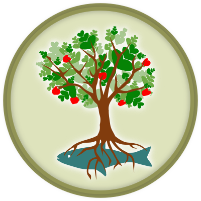

New Forest Aquaponics
Towards Transition through Aquaponics & Ecobricks
Dave & Lucie run New Forest Aquaponics Community Interest Company as a regenerative contribution to the biosphere, our community & people
Our History
Our love of aquaponics grew from our love of plants and fish.
After going through some tough times as a family we realised that families like ours need a place to recover and learn. We began to formulate our ideas.
Our Goals
We aim to provide a rounded, regenerative community that people can replicate across the UK.
This will include the growing of food, ecobricks and all the connections between.
We aim to be working examples of aquaponics and ecobricks benefitting communites.
Who we are
New Forest Aquaponics is the idea of David Green & Lucie Mann. David is a trained fish farmer and has worked with many species of fish over his 30-year career. Lucie loves to grow and make things.
Having seen the problems caused by poor farming - lack of nutrients in our food - lack of quality and freshness - plastic packing - high prices - environmentally and money wise we want to do something about it!
To do this we are using our skills to develop the first aquaponics farm in the New Forest (south UK.) - we have the site, we have a huge amount of equipment (recycled of course), we just need financial support to be able to turn this into a productive aquaponics farm.
We are now a community Interest company (CIC), which means we are a non profit company that will invest any money made back to the project.
As community is an important part of any farm we want to share the journey with others, both our children are home educated so we would like to provide a learning space for other home ed families. Especially teenage boys who need to find their "village" to guide them through those lost years.
We would also like to focus on supporting stroke survivors with their rehabilitation, as our family are living day to day with the effects of a stroke, with Lucie falling ill with a stroke at 48. It would mean so much to us to give meaningful opportunities to help rebuild lives after the devastation of a stroke - not just the stroke victim but the families as well.
We are very passionate about helping everyone to rediscover a more connected way of living, respecting our biosphere. As part of this, we have started working with ecobricks. Lucie and her son Robbie have trained as Global Ecobrick Alliance (GEA) Ecobrick trainers. They give talks and run workshops on how to reduce your plastic. 2019 will see many things built on site at the greenhouses with ecobricks to help inspire people to use them within their communities.
The Watercress Queen
This is Lucie's online persona. Why? Because she grows the watercress and eats lots of it! You can find her on Facebook, Instagram,Pinterest, and Twitter under that name. Links to all are at the bottom of each webpage where you will find regular updates on them.
Aquaponics
Our New Forest site needs to be made safe and secure so we can start aquaponic farming with co workers and volunteers.
Ecobricks
Working with the Global Ecobrick Alliance to educate about plastic and how we can change our attitude to its value within society.
Holding workshops on ecobricks and building with cob, getting more and more ecobrick trainers into communities. Regenerative programs
Raising consciousness around food, community growth, and harmonious living within our biosphere. Starting with the children, these will focus around the aquaponic growing of edibles, with different programmes aimed at the target audience to focus learning and healing, whilst working together to raise awareness of environmental issues.
Find more ways to help!
A nonprofit is as strong as the community that holds it up. Together, we can do more than we can do alone. Let's bring our abilities and passions together to affect real change.
There are many ways to join us and support our mission. Contact us to find out more about volunteer opportunities, fundraising events, and ways that you can get our message to your friends and family.